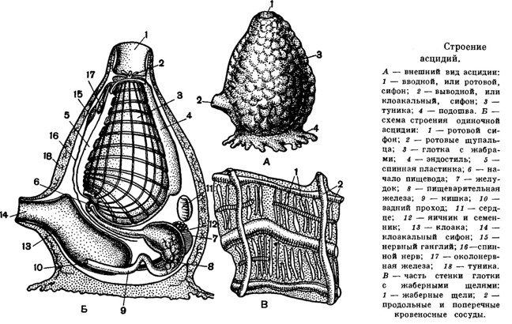

Подтип Оболочники (Tunicata)
Подтип содержит 3 класса: класс асцидии (Ascidiacea) , класс сальпы (Thaliacea) , класс аппендикулярии (Appendiculariae) . Сравнительно многочисленная (около 2150 видов) группа исключительно морских животных, резко отличных от других хордовых тем, что во взрослом состоянии у подавляющего большинства видов отсутствуют хорда и нервная трубка. В личиночном возрасте, наоборот, все основные признаки типа выражены у оболочников вполне отчетливо. Многие виды оболочников ведут прикрепленный образ жизни, обитая одиночно или колониально; есть и свободноплавающие виды, населяющие пелагические части тропических и субтропических морей. класс Асцидии (Ascidiacea ) К этому классу принадлежит большинство оболочников (около 2000 видов), представленных чаще всего сидячими формами, как одиночными, так и колониальными. Тело снаружи покрыто туникой, состоящей из туницина. Под туникой имеется кожно-мускульный мешок – мантия. Мускулатура гладкая. Существует как бесполое (почкование) так и половое размножение. Асцидии гермафродиты: в теле одной особи есть и яичник, и семенник. Оплодотворение наружное. Имеется стадия плавающей личинки, имеющей основные признаки хордовых. Внешне она слегка напоминает головастика: ее "голова" содержит все органы, а хвост позволяет быстро перемещаться. В хвосте кроме мускулатуры и плавниковой складки закладываются хорда и нервная трубка.
Взрослая асцидия внешне похожа на двугорлую банку. Основанием своего тела (так называемой подошвой) она прикреплена к выступам дна. На верхней части тела расположен трубкообразный вырост с отверстием, ведущим в огромную мешковидную глотку. Это ротовой сифон. Другое отверстие расположено ниже сбоку - это клоакальный сифон. Глотка пронизана большим числом мелких отверстий - стигм. На дне глотки находится отверстие, ведущее в короткий пищевод. Пищевод переходит в мешковидный желудок. Короткая кишка открывается в атриальную полость, которая сообщается с наружной средой через отверстие - атриопор, располагающееся на клоакальном сифоне. Питание пассивное, есть эндостиль. Кровеносная система незамкнутая, лакунарная. Сердце имеется. Движение крови маятникообразное. Нервная система состоит из лишенного внутренней полости ганглия. Органы выделения – почечные пузырьки (почки накопления).
Класс делится на четыре отряда: Аspiraculata - глубоководные животные, обитающие в основном в абиссальной зоне океана на глубине 3000-5000 м. Имеют шесть мускулистых щупалец, способных схватывать мелких беспозвоночных, которыми они питаются, и вводной сифон таким образом превратился у них в ловчий орган. Глотка стала узкой и короткой. Она лишена настоящих жаберных щелей, покрытых ресничным эпителием, но сообщается с атриальной полостью при помощи небольшого числа отверстий Aplousobranchia – колониальные формы, гонады окружены петлей кишечника, стенка глотки простая. Stolidobranchia – одиночные формы. Гонады погружены в стенку тела и лежат вдоль глотки с продольными складками и внутренними перегородками. Phlebobranchia – большей частью одиночные. Гонады расположены, как у Aplousobranchia, глотка без складок, но с характерными продольными перегородками внутри, образованными раздвоенными сосочками.